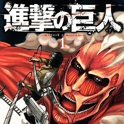

Lidé byli nuceni bojovat s obry o záchranu svého pokolení. Když se schylovalo k nejhoršímu, postavili několik měst pod ochranou mohutných zdí, které obři nedokázali překonat. Po jedno celé století si lidé za hradbami mohli oddechnout a žít v relativním míru, avšak odříznuti od okolního světa. Mír ale trval jen do dne, než jedno z těchto měst, obehnané zdí, Maria, bylo napadeno dosud nevídaným šedesátimetrovým obrem, kterému se ochranu města podařilo překonat. Ústřední postava příběhu Aren Jaegar se svou adoptivní sestrou Mikasou při útoku přicházejí o svoji matku a vydávají se vstříc nehostinému světu.
